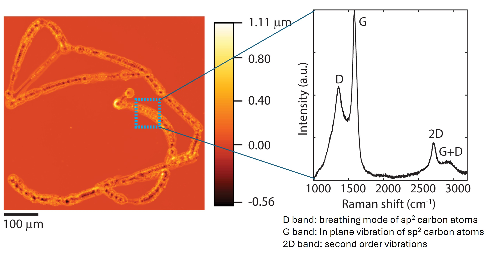

Check out my research on nanomaterials engineering and process development
Direct Laser Writing of Graphitic Carbon from Liquid Organic Precursors using Thermal Voxels
Figure 1: This image (left is profilometry image and right is Raman spectrum of spot) demonstrates the Penn State mascot Nittany Lion that I patterned using laser writing of liquid organic precursor molecules on glass substrate. I used ImageJ to first extract the coordinates of a Nittany lion that I drew in Adobe Illustrator, then got MATLAB to scale and convert the coordinates into values that our automated stage could read and pattern on a substrate in the appropriate scale. I also had to build a program in LabVIEW to ensure that the stage followed the coordinate list properly and drew the shape desired.
The hypothesis for this work was based on the feasibility of using Continuous Wave (CW) lasers to induce solvothermal reactions in liquid organic molecules, thereby depositing some form of "laser induced graphene" on a substrate. Laser induced graphene is an inexpensive way to form defective or 3D graphene from various solid polymers ranging from wood to potatoes to polyimide on laser irradiation. This material helps circumvent the more expensive methods of producing graphene such as exfoliation, to produce a material that is widely tunable in its structure and property and thereby can be used in a wide range of applications from sensing to catalysis to electrochemical storage.
The goal with using solvothermal decomposition of liquid organic compounds to form this "3D graphene" was to expand the range of precursors that could directly deposit this 3D graphene on a wider variety of substrates without the need for transfer, say from a potato to a polymer film for making a wearable sensor. Since this method had not been reported yet, I adopted a "bareback" approach and gathered each and every organic precursor under the sun (aka the chemical cabinets in my lab). I then irradiated each one in series with a 632nm CW laser until some of them (aka ones with an aromatic ring and a polar group attached to the ring) had the magic recipe to deposit 3D graphene like material on the substrates.
I am incredibly proud of this work as it was a project driven to completion by me under the supervision of my brilliant advisor Dr. Lauren Zarzar, whose pioneering work on laser irradiated solvothermal deposition of metal oxides set the stage for this paper.
Take a look at this paper for more details on the methodology and discussion.
Using High Pressure Chemical Vapor Deposition (HPCVD) to deposit silicon, germanium and SiGe Metalattices

Figure 2: Schematic showing how semiconductor precursors (silane, germane, etc.) in high pressure carrier gas (helium) have small mean free paths and can therefore infiltrate the interstices of a silica nanoparticle assembly. When the temperature is raised to the pyrolysis temperature, the precursors decompose and deposit the corresponding semiconductor in the interstices. This results in the structure shown in the middle. Once the original nanoparticle spheres are etched out using isotropic etchant such as hydrofluoric acid, the resulting semiconductor film looks like the scanning electron microscope image on the right. The structure-property relationship of this metalattice framework is highly tunable through the selection of the nanoparticle size in the initial template, as well as the selection of the appropriate semiconductor for band gap tuning.
This research was a highly collaborative one in an NSF Interdisciplinary Research Group (IRG) formed between multiple departments and institutions. The inception of the metalattices originally came from Dr. Vincent Crespi's theoretical paper on how quantum confined structures can also exist with dispersive electronic states in such structures. (Read his original work here). This idea was then adopted by my advisor the late Dr. John Badding and his collaborators to realize experimentally in the NSF funded IRG.
I started in this IRG whie it was midway through the funding cycle. From that point onwards, I contributed to optimizing the porosity of metalattices from which the template had been etched out and core-shell structures, as well as exploring opportunities to deposit epitaxial silicon as metalattices. I was able to experiment with various concentrations of hydrofluoric acid as well as the time required to etch the underlying silica templates of different sizes, thereby enabling the tuning of thermal conductivity of silicon in metalattice form. Read More on our work on tuning the thermal conductivity of silicon nanoparticles in ACS Nano